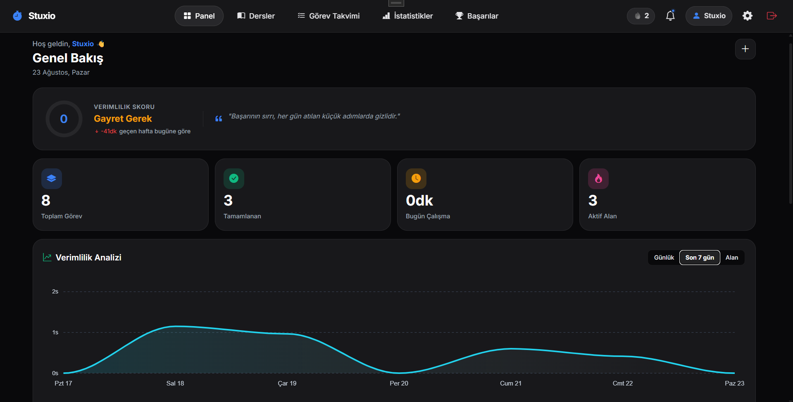
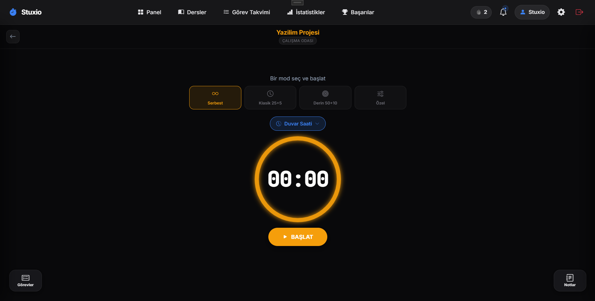
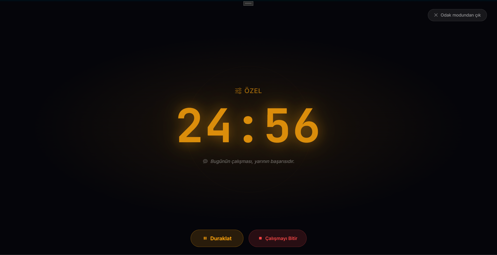
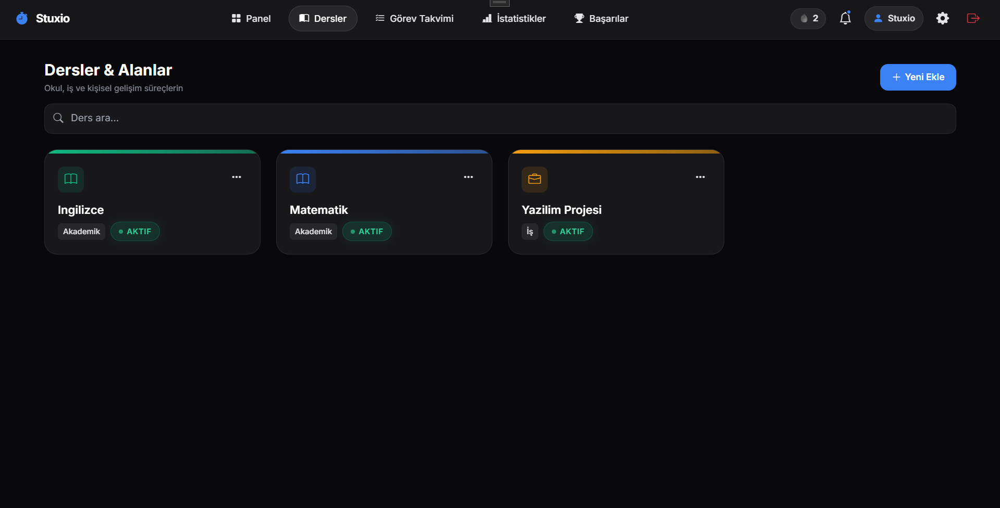
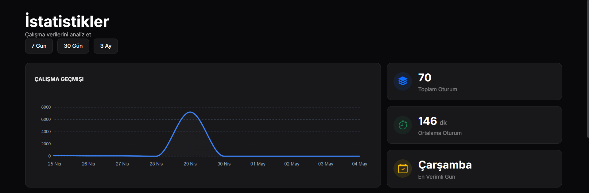

Odak kronometresi
Serbest kronometre, klasik 25+5, derin 50+10 veya kendi belirlediğin süre. Mola bitimleri ve süre sonu bildirimle haber verilir.
Stuxio ders planlarını, görevleri, odak kronometresini ve çalışma istatistiklerini tek akışta toplar. Bağlantın kesilse bile kronometre durmaz — kaydın cihazında tutulur, internet gelince sunucuyla eşitlenir.
Stuxio henüz mağazalarda yayında değil. Yayın tarihi belli olduğunda burada duyurulacak.

Dağınık not defteri, ayrı kronometre ve ayrı takvim yerine tek bir çalışma akışı.
Serbest kronometre, klasik 25+5, derin 50+10 veya kendi belirlediğin süre. Mola bitimleri ve süre sonu bildirimle haber verilir.
Bağlantı koptuğunda sayaç durmaz. Yaptığın değişiklikler cihazda sıraya alınır, internet gelince otomatik eşitlenir.
Her ders veya proje için ayrı bir alan aç, altına görevlerini yaz. Görevi kronometreye bağlayınca süre doğrudan ona işlenir.
Günlük ve haftalık süre dağılımı, en verimli saat aralıkların, alan bazlı kırılım ve oturum geçmişi.
Görev hatırlatmaları ve teşvik bildirimleri uygulama kapalıyken de çalışsın diye işletim sistemine önceden planlanır.
Aynı hesapla bir telefon ve bir masaüstünde eşzamanlı oturum. Veriler iki tarafta da güncel kalır.
Görseller masaüstü sürümünden alınmıştır.






Ücretsiz plan kalıcıdır ve süre sınırı yoktur. Aşağıdaki farklar uygulamada birebir geçerlidir.
Başlamak için yeterli.
Sınırları kaldırır.
Fiyatlandırma yayın sırasında mağaza üzerinden duyurulacaktır.
Çalışma sürene dokunulmaz. Kronometreyi çevrimdışı durdurmak hiçbir planda engellenmez. Harcanmış bir çalışma süresini bağlantı yok diye silmek özellik kısıtı değil, veri kaybı olurdu.
Evet. Kronometre cihazın saatinden hesaplandığı için bağlantı olmadan da doğru sürer ve uygulama kapatılıp açılsa bile süre kaybolmaz. Kayıtlar cihazda saklanır, bağlantı gelince sunucuyla eşitlenir. Ücretsiz planda çevrimdışıyken yeni ders/görev oluşturma kapalıdır; çalışma oturumları her planda açıktır.
Evet — aynı anda bir telefon ve bir masaüstü oturumu açık kalabilir. Aynı türden ikinci bir cihazdan giriş yapılırsa önce onay istenir, onaylarsan diğer cihazdaki oturum kapanır. Masaüstü uygulaması Premium gerektirir.
Hesabın ve çalışma verilerin Avrupa Birliği'nde (Frankfurt) barındırılan bir PostgreSQL veritabanında, cihazındaki kopya ise uygulamanın kendi yerel deposunda tutulur. Ayrıntı için Gizlilik Politikası.
Hayır. Uygulamada reklam ağı, üçüncü taraf analitik veya izleme aracı bulunmuyor; verilerin satılmaz veya pazarlama amacıyla paylaşılmaz.
Uygulama içinden Profil ekranındaki “Hesabı sil” adımıyla ya da bize e-posta göndererek. Süreç ve silinen veriler: Hesap ve veri silme.
iOS, Android ve Windows. Uygulama .NET MAUI tabanlıdır ve üç platformda da aynı arayüzü kullanır. Türkçe, İngilizce ve Almanca dil desteği vardır.
Hata bildirimi, öneri ve hesabınla ilgili talepler için doğrudan yazabilirsin.
support@stuxio.net